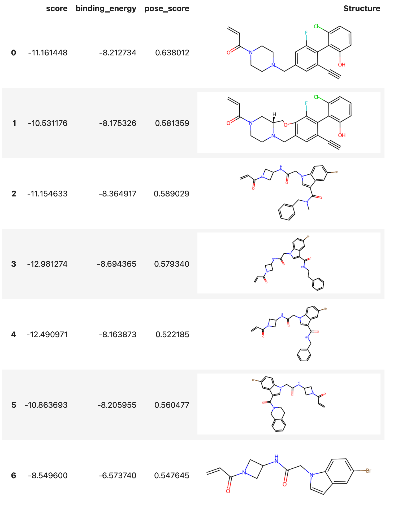

Docking¶
This document describes how to dock a set of ligands to a protein using Deep Origin tools.
Prerequisites¶
We assume that we have an initialized and configured Complex object:
from deeporigin import drug_discovery as dd
sim = dd.Complex.from_dir("/path/to/folder/")
sim.connect()
Starting a docking run¶
To dock all ligands to the protein, parallelizing and batching across all ligands, we do the following:
sim.dock(
batch_size=30,
box_size=[15, 15, 15], # match to your protein
pocket_center=[13, -6, 22], # match to your protein
)
This queues up tasks on Deep Origin. When it completes, the results of docking can be viewed.
Viewing status of docking¶
The status of docking runs can be viewed using:
sim.get_status_for("Docking")
Expected output
A typical output can look like:
{'ccdb9ba9-b3d2-4083-bb4c-7c7249f7dbc2': 'Succeeded',
'17a0b478-c11d-48a9-9bce-2e0272b804fb': 'Running',
'08342c26-b773-4423-91c3-3fcbe4955778': 'Running'}
The keys are IDs of the jobs running on Deep Origin. You may see different numbers of jobs based on your batch_size parameter and the number of ligands in your dataset.
Results¶
Viewing results¶
After completion of bulk docking, we can view results using:
sim.show_docking_results()
This shows a table similar to:

Exporting for further analysis¶
To obtain the raw dataframe for further analysis, use:
df = sim.get_docking_results()